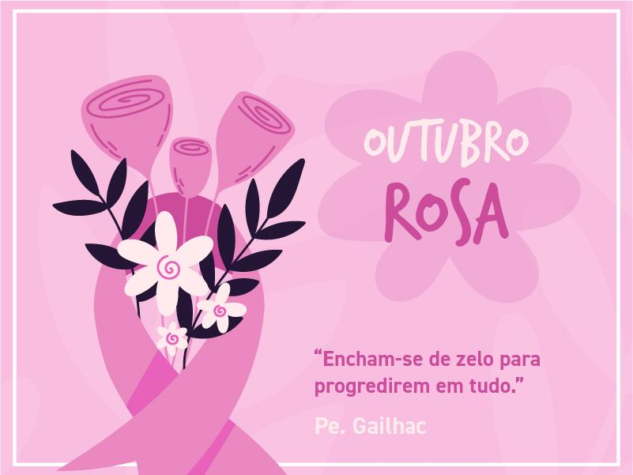

.jpg) O que é o Outubro Rosa?
O que é o Outubro Rosa?
O movimento internacional de conscientização para a detecção precoce do câncer de mama, Outubro Rosa, foi criado no início da década de 1990, quando o símbolo da prevenção ao câncer de mama — o laço cor-de-rosa — foi lançado pela Fundação Susan G. Komen for the Cure e distribuído aos participantes da primeira Corrida pela Cura, realizada em Nova York (EUA) e, desde então, promovida anualmente..
O objetivo do Outubro Rosa 2023 é divulgar informações sobre o câncer de mama e fortalecer as recomendações do Ministério da Saúde para prevenção, diagnóstico precoce e rastreamento da doença.
A doença é causada pela multiplicação desordenada de células anormais da mama, formando um tumor com potencial de invadir outros órgãos. Há vários tipos de câncer de mama – alguns com desenvolvimento rápido, enquanto outros crescem lentamente. A maioria dos casos, quando tratados adequadamente e em tempo oportuno, apresentam bom prognóstico e possibilitam melhores resultados estéticos.
"O Outubro Rosa é uma campanha internacional de conscientização da sociedade a respeito da importância da prevenção ao câncer de mama e de manter um acompanhamento médico regular a fim de garantir um diagnóstico precoce em caso de identificação da doença. Essa campanha não surgiu no Brasil, e sim nos Estados Unidos."
"A campanha do Outubro Rosa é fundamental para que as mulheres se orientem sobre manterem o acompanhamento médico a fim de se prevenirem do câncer de mama. Essa campanha é marcada por ações governamentais, de instituições médicas e da sociedade civil."
Procura também mobilizar a sociedade em torno dessa causa, fomentando ações que forneçam informação sobre a doença bem como acesso ao atendimento médico.
